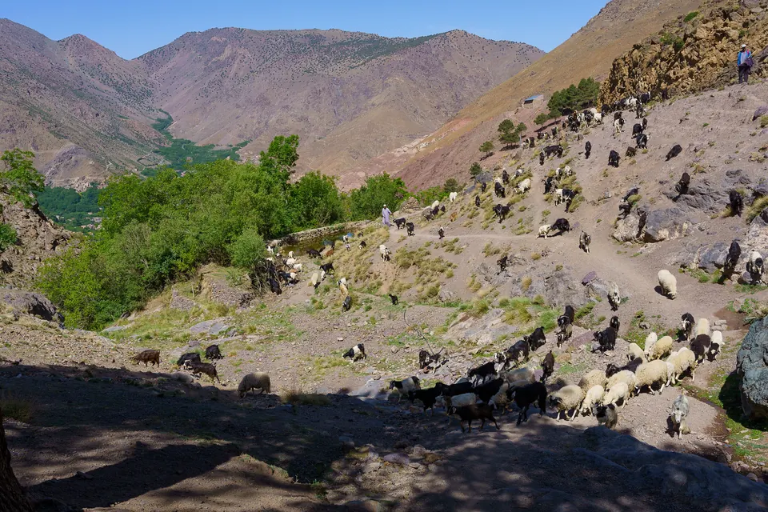

Culture & villages · MOROCCO EXPLORER TOURS
Dans les villages amazighs du Haut Atlas : vie quotidienne et hospitalité
Avant d’être un décor de randonnée, le Haut Atlas est une terre habitée. Dans chaque vallée, des familles amazighes cultivent les terrasses, élèvent leurs bêtes et accueillent les voyageurs depuis toujours. Comprendre un peu leur quotidien change complètement la façon de marcher dans ces montagnes.

Qui sont les Amazighs du Haut Atlas ?
Les Amazighs, souvent appelés Berbères, sont les premiers habitants de l’Afrique du Nord. Le mot Imazighen, pluriel d’Amazigh, est souvent traduit par « les hommes libres ». Dans le Haut Atlas autour de Marrakech, la langue du quotidien est le tachelhit, l’une des langues amazighes.
Depuis 2011, l’amazigh est une langue officielle du Maroc, à côté de l’arabe. Vous verrez son alphabet, le tifinagh, sur certains panneaux et bâtiments publics. Dans les villages, beaucoup parlent aussi l’arabe dialectal marocain, la darija ; le français est surtout parlé par les guides et les plus jeunes.
Une journée au village
La vie suit le rythme des saisons. Sur les terrasses, irriguées par de petits canaux appelés séguias, on cultive l’orge, le maïs, les légumes, et les arbres donnent des noix et des pommes. Chaque goutte d’eau est partagée selon des règles anciennes entre les familles.
Les moutons et les chèvres sortent chaque jour vers les pentes. En été, une partie des troupeaux monte vers les pâturages d’altitude, gérés collectivement selon un système appelé agdal, qui protège l’herbe jusqu’à une date fixée par la communauté. La mule reste l’animal indispensable : elle porte le bois, les récoltes et, sur nos treks, vos bagages.

Des maisons de terre et de pierre
Les maisons traditionnelles sont construites en pierre et en terre damée, avec des poutres de bois et des toits plats. Ces toits servent à faire sécher les récoltes, et le rez-de-chaussée abrite souvent les animaux et les réserves. Les villages s’étagent à flanc de montagne pour garder les terres plates aux cultures.
En septembre 2023, un fort séisme a frappé la région d’Al Haouz, et de nombreux villages du Haut Atlas ont été durement touchés. La reconstruction se poursuit. Voyager avec des guides, des muletiers et des hébergeurs locaux, c’est aussi soutenir directement les familles de ces vallées.

À table : pain, tajine et thé à la menthe
Le pain est cuit chaque jour, souvent dans un four en terre, et accompagne tous les repas. Le tajine mijote longuement sur la braise : légumes, viande ou poulet, olives, épices. Le couscous est traditionnellement servi le vendredi. Selon la vallée, on vous proposera aussi du miel, de l’huile d’olive ou des noix.
Le thé à la menthe est le cœur de l’accueil : thé vert, menthe fraîche et beaucoup de sucre, versé de haut pour faire de la mousse. On mange souvent dans un plat commun, avec la main droite et un morceau de pain. Si vous préférez moins de sucre, demandez simplement « bla sukkar », sans sucre.
Être un invité respectueux
Quelques mots font toujours plaisir : « Salam alikoum » pour dire bonjour, « Azul » en amazigh, et « Tanmirt » pour dire merci en tachelhit. Retirez vos chaussures en entrant dans une maison, acceptez le thé qu’on vous offre et goûtez au moins un peu de chaque plat.
Dans les villages, une tenue qui couvre les épaules et les genoux est appréciée, pour les femmes comme pour les hommes. Demandez toujours avant de photographier quelqu’un, surtout les femmes et les enfants, et acceptez un refus avec le sourire. Évitez de donner bonbons ou argent aux enfants : cela encourage la mendicité. Si vous souhaitez aider, parlez-en à votre guide, qui saura orienter votre geste vers l’école ou une coopérative.
Ce que votre visite apporte aux vallées
Le tourisme de montagne fait vivre de nombreuses familles : guides, muletiers, gîtes, cuisinières, coopératives. Une nuit chez l’habitant, comme sur notre trek dans la vallée de l’Oued Zat, est l’une des plus belles façons de partager ce quotidien. Pour une première approche, une journée à Imlil permet déjà de traverser plusieurs villages et de prendre le thé dans une maison berbère.
Questions fréquentes
Faut-il parler tachelhit ou arabe ?
Non. Votre guide traduit, et quelques mots comme « Azul » ou « Tanmirt » suffisent à créer un sourire.
Peut-on dormir chez l’habitant ?
Oui. Notre trek dans la vallée de l’Oued Zat se fait entièrement chez des familles ou en bivouac. Le confort est simple, l’accueil est chaleureux.
Que faire si je ne mange pas de viande ?
Dites-le à l’avance : tajines de légumes, omelettes, lentilles et salades sont faciles à préparer en montagne.
Rencontrer les villages de l’Atlas
Une journée à Imlil ou quatre jours chez l’habitant : nous vous aidons à choisir la sortie qui vous fera vraiment partager la vie des vallées.